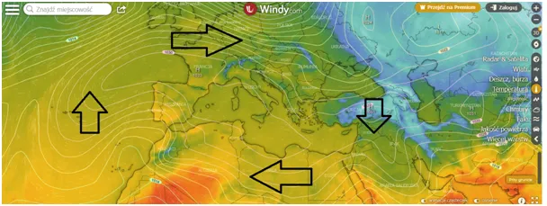
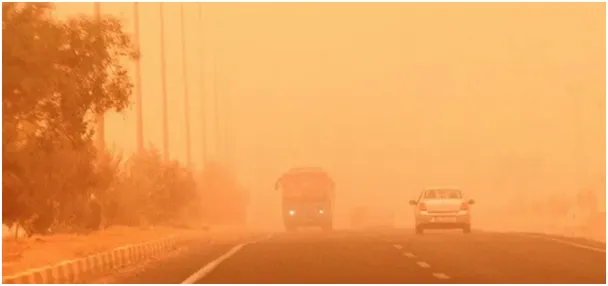
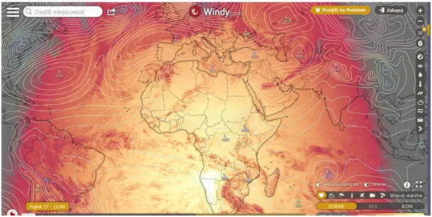
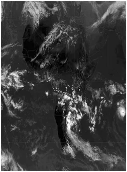

Nów i nowe idzie.
Drugi tydzień wyż ściąga zimne powietrze na bliski wschód. Na granicy Syrii i Turcji zimno, powietrze nagrzewa się już trochę nad Saharą, dobiera wilgoci nad Atlantykiem i właśnie wpada do Polski w postaci ciepłego deszczu. W poniedziałek nów Księżyca i sprawy potoczą się po nowemu.

Jeśli wyż przesunie się w prawo to Grecy poczują ciepły, afrykański wiatr. Z tym wiatrem wiosną do Grecji i Turcji leci czerwony pył z Afryki, potrafi zasypać ulice, tradycyjnie auta nadają się do sprzątanie a filtry do wymiany. Pamiętam kilka razy czerwonawy śnieg w Polsce, to było właśnie to, darmowe nawożenie pol.

Ostatnia mapka pokazuje, gdzie słonce świeci najmocniej, jest już 12 stopni od równika. Zaczyna się globalne mieszanie powietrza. Wszytko, co przez pól roku marzło na północy, teraz trzeba podgrzać.

Pamiętajmy, że atmosfera jest dla słonecznego światła przeźroczysta, czyli nie nagrzewa się od Słońca. Słońce najpierw musi nagrzać grunt lub wodę i potem ciepło poprzez kontakt lub w postaci podczerwieni nagrzewa powietrze. Dlatego do maja ciepło w Polsce będzie przynoszone z innych rejonów, często w postaci ciepłego deszczu. Dziś w Warszawie pada deszcz i jest 7 st. a rano było tylko 4.

Wilgotne powietrze, gdy wytrąca krople robi się cieplejsze, bo dostaje energię przejścia fazowego, która była potrzebna gdzieś na Karaibach do stworzenia z cieczy pary wodnej. Dlatego latem w lesie jest chłodno, bo las działa identycznie, jak nasze lodówki. Pobiera ciepło z powietrza, aby wodę w liściach zamienić na parę wodną. Zobaczcie co dzieje się w południe nad Afryką równikową. Dżungla to maszyna do chłodzenie powietrza i wysyłania go w postaci chmur do nas.
Dlatego, gdy podniesione nad Alpami powietrze się schłodzi i odda wodę w postaci śniegu opadając będzie szybko się nagrzewało przynosząc Węgrom i Chorwatom wiosnę. To jest fen, po polsku halny.
Paweł Klimczewski